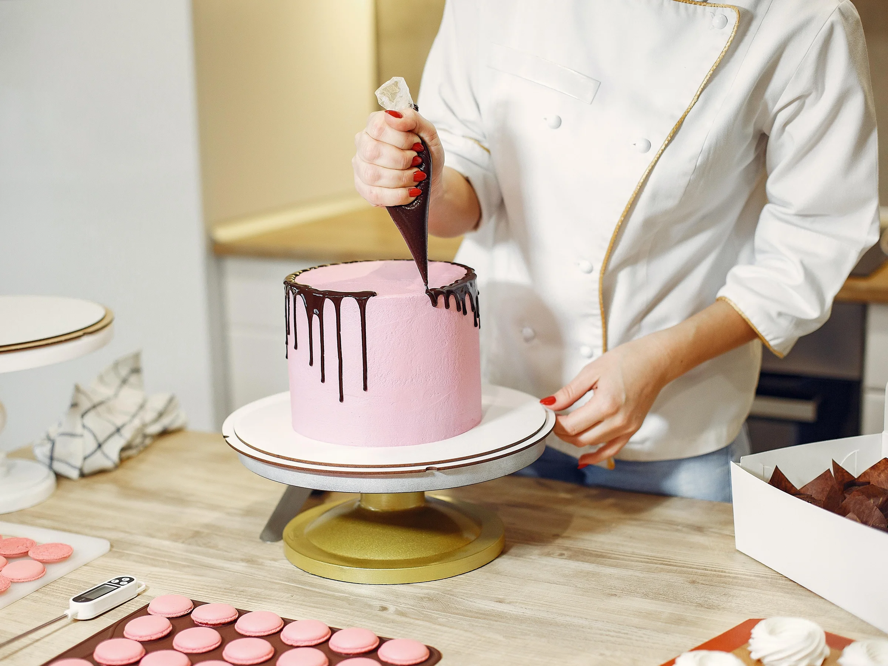

Sales Marketing
Private University (2020)
- Planning and carrying marketing communication with public relation.
- Do the research of marketing.
- Marketing planning.
EDP Clerk
Econsave (February 2021 - May 2021)
- Inputting data into computer systems accurately and efficiently.
- Organizing and maintaining files and records so they are readily accessible.
- Preparing and sorting documents for data entry.

Pastry Chef
D’Place Kitchen (May 2021 - November 2021)
- Measuring and mixing ingredients accurately according to the recipes.
- Using various baking techniques and equipment to prepare pastries, cakes, and other baked items.
- Designing and updating dessert menus to reflect seasonal ingredients, trends, and customer preferences.